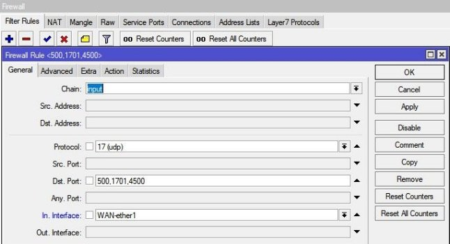

Налаштування MikroTik VPN сервера L2TP
VPN-сервер є популярним засобом для віддаленого підключення одного ПК(або 100 ПК) до центрального вузла. Реалізація такого сервісу є маса, але на MikroTik працює швидко та без інцидентів через недоступність. У прикладі наведено випадок L2TP як захищеного засобу передачі трафіку.
Для VPN клієнтів краще створити окрему підмережу, це додасть більше можливостей обмеження доступу між VPN клієнтами і локальною мережею, а також у самій маршрутизації.
Додавання нової підмережі
Налаштування знаходиться IP→Pool
/ip pool add name=LAN-Ip-Pool ranges=192.168.10.100-192.168.10.150
Налаштування VPN сервера L2TP (на сервері)
Налаштування знаходиться PPP→Profile
Попередньо потрібно задати параметри мережі для VPN клієнтів
/ppp profile
add change-tcp-mss=yes dns-server=192.168.10.1 local-address=\
192.168.10.1 name=l2tp remote-address=pool-1 use-encryption=yes
Активация VPN-сервера L2TP
Настройка находится PPP→Interface→L2TP Server
/interface l2tp-server server
set authentication=mschap2 default-profile=l2tp enabled=yes \
ipsec-secret=mikrotik-config.ukr use-ipsec=required
Use-ipsec=required змусить vpn клієнта обов'язково використовувати IpSec;
Use-ipsec=yes(за умовчанням) проставляє вибір vpn клієнту у використанні IpSec, тобто. може не використовуватись.
Створення облікового запису для клієнта VPN
Цей обліковий запис буде використовувати VPN клієнт для віддаленого підключення до VPN серверу.
Налаштування знаходиться PPP→Interface→Secrets
/ppp secret
add name=user1 password=user1 profile=l2tp
Дозвіл FireWall для підключення VPN клієнтів
Налаштування знаходиться IP→Firewall

/ip firewall filter
add action=accept chain=input comment="Port Access" dst-port=500,1701,4500 \
in-interface=WAN-ether1 protocol=udp
Налаштування інтернету для VPN клієнтів L2TP у MikroTik
Таких сервісів може бути безліч і всі вони мають індивідуальний характер (для тих хто шукає: потрібно налаштувати та дозволити DNS запити та Masquerade).
Налаштування VPN підключення L2TP між MikroTik, об'єднання офісів
У цьому налаштуванні братимуть участь два роутери MikroTik, один як сервер, інший як клієнт. На етапі створення такого підключення варто звернути увагу модель MikroTik, т.к. від неї залежить кількість VPN підключень, і навіть можливість обробляти такі потоки даних. Для консультації з цього питання звертайтесь до Налаштування-Мікротік.укр через контактну форму.

Для об'єднання двох офісів і роботи маршрутизації це налаштування краще розбити на два блоки:
- Налаштування клієнт-серверної частини;
- Додавання статичних маршрутів для проходження трафіку.
Серверна частина була описана ваша, але вимагає коригування у вигляді статичних адрес для VPN клієнта
Налаштування знаходиться PPP→Interface→Secrets
/ppp secret
add local-address=192.168.10.1 name=user2 password=user2 profile=l2tp \
remote-address=192.168.10.2
а клієнтська частина складається з налаштування L2TP клієнта.
Налаштування L2TP клієнта (на клієнті)
Налаштування знаходиться PPP→Interface→+L2TP Client

/interface l2tp-client
add connect-to=90.200.100.99 disabled=no ipsec-secret=mikrotik-config.ukr use-ipsec=yes name=\
l2tp-out1 password=user2 user=user2
Налаштування маршрутизації з боку сервера VPN
Це правило вкаже роутеру MikroTik, куди направляти трафік.
Налаштування знаходиться IP→Routes
/ip route
add distance=1
dst-address=192.168.88.0/24 gateway=192.168.10.2
Налаштування маршрутизації з боку VPN клієнта
Налаштування знаходиться IP→Routes
/ip route
add distance=1 dst-address=192.168.0.0/24 gateway=192.168.10.1
Налаштування Windows VPN підключення L2TP
ОС сімейства Windows мають штатний VPN клієнт, який добре підходить під цю роль. Для його налаштування потрібно перейти
Панель керування\Мережа та Інтернет\Центр керування мережами та загальним доступом
створення Windows VPN клієнта
вибір нового підключення
використовувати поточне підключення до Інтернету
вказати адресу VPN сервера
налаштування VPN клієнта Windows
вказати ключ IpSec
підключення Windows VPN

статус підключення Windows VPN